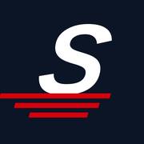

—
–Ritten
–Open
–Km
–Omzet

Je ritten van vandaag, statussen en handtekeningen. Alleen voor Schaap Express Transport.
Voor werk dat telefonisch binnenkomt. De prijs, de bevestiging aan de klant en de factuur lopen daarna vanzelf.